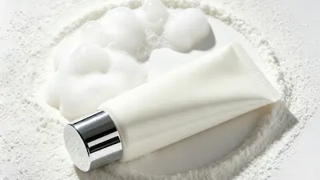
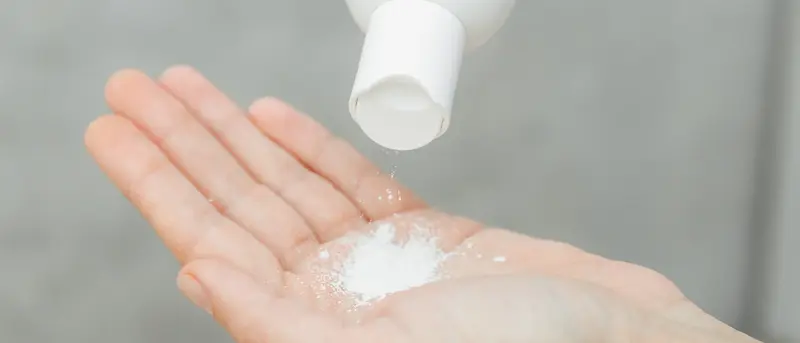
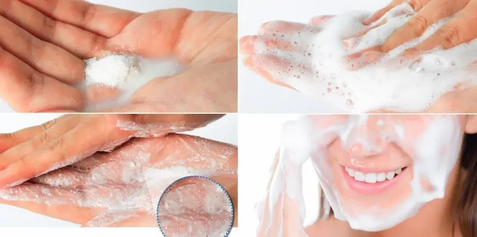
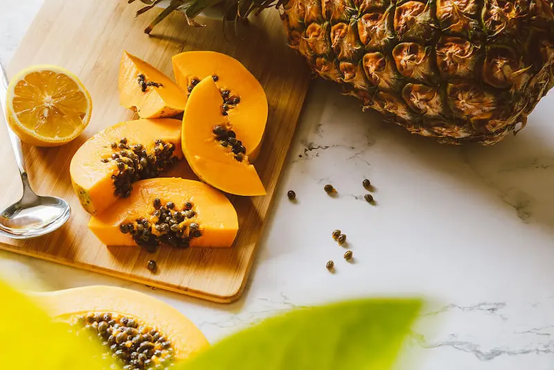
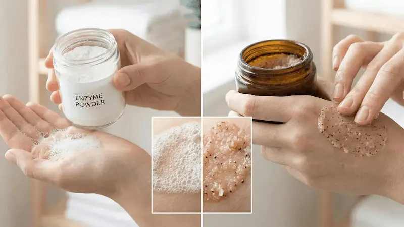
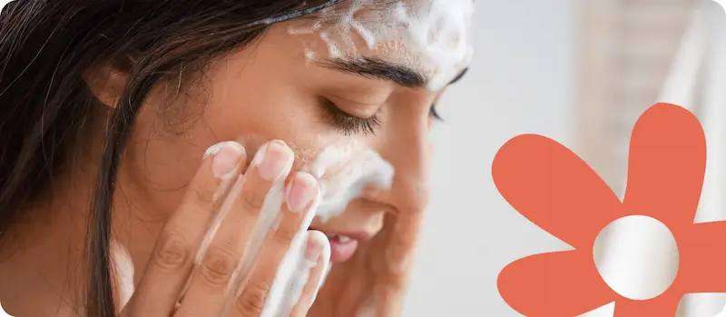

Энзимная пудра и энзимный пилинг: руководство по энзимному отшелушиванию
Энзимная пудра и энзимный пилинг — это виды отшелушивания, которые помогают удалять омертвевшие клетки с поверхности кожи. В косметических формулах часто используются протеолитические ферменты, такие как папаин и бромелаин, которые воздействуют на белки рогового слоя кожи.
Энзимное отшелушивание может быть интересным вариантом для тех, кто ищет альтернативу механическому скрабированию или некоторым средствам с кислотами. Однако результат и переносимость зависят от конкретного продукта, концентрации и стабильности ферментов, pH формулы и индивидуальных особенностей кожи.
Посмотреть услугиНе уверены, какое средство выбрать?
Если сложно подобрать уходовую или декоративную косметику самостоятельно, вы можете получить персональную консультацию специалиста.
- ✔ Подбор ухода по типу кожи
- ✔ Подбор декоративной косметики
- ✔ Индивидуальные рекомендации
Краткий гид по энзимной пудре и энзимному пилингу
Что такое энзимная пудра?
Как работают энзимные пудры и чем они отличаются от обычных средств для очищения кожи.
Что такое энзимный пилинг?
Принцип энзимного отшелушивания и каких результатов можно ожидать от этой категории средств.
Папаин или бромелаин?
Наиболее известные протеолитические ферменты, используемые в средствах для отшелушивания.
Энзимы или кислоты?
Основные различия между энзимным отшелушиванием и эксфолиацией с помощью AHA- или BHA-кислот.
Для какого типа кожи?
Как выбрать энзимное отшелушивание с учётом потребностей и особенностей кожи.
Как выбрать подходящее средство?
Что проверить перед покупкой энзимной пудры или энзимного пилинга.
Энзимы или скраб — что выбрать для кожи?
Энзимы и скраб выполняют похожую задачу — помогают удалить ороговевшие клетки с поверхности кожи, но работают по-разному. Скраб воздействует механически: частички средства отшелушивают кожу за счёт трения. Энзимные средства действуют деликатнее — благодаря ферментам, которые помогают расщеплять белковые связи между ороговевшими клетками.
Именно поэтому энзимы часто выбирают для более мягкого и комфортного отшелушивания, особенно когда не хочется дополнительно травмировать кожу трением. Однако выбор средства всегда зависит от состояния и особенностей кожи: частота использования и подходящий формат ухода должны подбираться индивидуально.
Главное правило — отшелушивание должно помогать коже, а не становиться причиной раздражения.


Что такое энзимная пудра?
Энзимная пудра — это средство для ухода за кожей, которое сочетает очищение с энзимным отшелушиванием. В зависимости от формулы порошок может содержать протеолитические ферменты, очищающие компоненты и другие ингредиенты, предназначенные для улучшения текстуры кожи.
Некоторые средства активируются водой и перед нанесением превращаются в пену или пасту. Способ применения зависит от конкретного продукта, поэтому важно следовать инструкции производителя.
Очищение и отшелушивание
Энзимная пудра может сочетать удаление загрязнений с поверхностным отшелушиванием, помогая сделать кожу более гладкой на ощупь.
Мягкая текстура
В отличие от скрабов с абразивными частицами, энзимные формулы не основаны преимущественно на механическом трении кожи.
Активация водой
Некоторые пудры предназначены для активации водой перед нанесением. Всегда соблюдай рекомендованные производителем количество продукта и время применения.
Не все формулы одинаковы
Наличие ферментов в составе не означает, что все средства обладают одинаковой интенсивностью действия. Формула, стабильность ферментов и условия применения влияют на их активность.


Что такое энзимный пилинг?
Энзимный пилинг — это форма отшелушивания, при которой протеолитические ферменты воздействуют на белки в составе омертвевших клеток на поверхности кожи. Папаин и бромелаин — одни из наиболее известных ферментов, используемых в косметических средствах.
Цель энзимного пилинга — улучшить внешний вид и ощущение кожи, сделать её поверхность более гладкой и визуально более ровной. Интенсивность действия зависит от формулы конкретного средства и способа его применения.
Для более гладкой кожи
Поверхностное отшелушивание может помогать удалять скопления омертвевших клеток и улучшать текстуру кожи.
Для более свежего вида кожи
Удаление клеток с поверхности кожи может способствовать более равномерному и свежему виду лица.
Без абразивного трения
Энзимное отшелушивание не основано на использовании абразивных частиц, поэтому может быть интересным вариантом для тех, кто предпочитает избегать механических скрабов.
Результат зависит от формулы
Не все энзимные пилинги имеют одинаковую концентрацию, стабильность или активность ферментов. Поэтому каждое средство следует оценивать индивидуально.


Папаин и бромелаин: в чём разница?
Папаин и бромелаин — два наиболее известных протеолитических фермента, используемых в косметике. Папаин связан с папайей, а бромелаин получают из ананаса. Оба фермента изучались в качестве компонентов средств для отшелушивания кожи.
Папаин
Протеолитический фермент, связанный с папайей. Используется в различных средствах для отшелушивания, включая энзимные пудры, маски и пилинги.
Бромелаин
Группа протеолитических ферментов, связанных с ананасом. Используется в косметических средствах для отшелушивания и улучшения внешнего вида кожи.
Фицин
Ещё один протеолитический фермент растительного происхождения, который встречается в некоторых косметических формулах и изучается благодаря своему потенциальному отшелушивающему действию.
Что имеет наибольшее значение?
Недостаточно выбирать средство только по названию фермента. Не менее важны состав формулы, стабильность ингредиентов и способ применения продукта.


Для какого типа кожи подходит энзимное отшелушивание?
Энзимное отшелушивание можно рассматривать в тех случаях, когда хочется провести поверхностную эксфолиацию без использования абразивных частиц. Однако выбор средства следует делать с учётом состояния кожи и состава продукта, а не только её типа.
Тусклая кожа
Может быть полезно, если поверхность кожи выглядит тусклой и хочется сделать её текстуру более гладкой.
Неровная текстура
Поверхностное отшелушивание может способствовать более гладкому ощущению и визуально более ровному виду кожи.
Сухая или обезвоженная кожа
Может быть подходящим вариантом при наличии омертвевших клеток на поверхности кожи, однако отшелушивание не заменяет увлажнение и уход за кожным барьером.
Чувствительная кожа
Некоторые люди с чувствительной кожей предпочитают энзимные формулы, однако чувствительность не гарантирует хорошую переносимость. Предварительное тестирование и соблюдение инструкции остаются важными.
Как выбрать энзимную пудру или энзимный пилинг?
Выбор энзимного средства не должен основываться только на слове «enzyme» на упаковке. Обращай внимание на полный состав и способ применения, рекомендованный производителем.
Проверь, какие ферменты используются
Папаин, бромелаин и фицин — примеры протеолитических ферментов, которые встречаются в средствах для отшелушивания.
Обрати внимание на остальной состав
Некоторые средства сочетают ферменты с кислотами, отшелушивающими частицами или другими активными ингредиентами. Это может влиять на интенсивность действия продукта.
Учитывай переносимость кожи
Если кожа раздражена, воспалена или очень чувствительна, отшелушивание может быть нежелательным до тех пор, пока кожа не успокоится.
Соблюдай инструкцию
Частота использования, время контакта и способ активации могут различаться у разных средств. Не стоит считать, что один и тот же способ применения подходит для всех энзимных пудр и пилингов.
Энзимы или кислоты?
И энзимное отшелушивание, и отшелушивание с помощью кислот могут улучшать текстуру и внешний вид кожи, однако действуют они по-разному. Выбор зависит от типа кожи, целей ухода и индивидуальной переносимости.
Энзимы не обязательно являются более мягкими, чем кислоты. Эффект и переносимость зависят от концентрации, формулы, pH, времени контакта и частоты использования.


Как правильно использовать энзимное отшелушивание?
Способ применения зависит от конкретного средства. Некоторые энзимные пудры активируются водой и используются как очищающие средства, тогда как энзимные пилинги могут иметь другое рекомендуемое время контакта с кожей.
Меры предосторожности перед энзимным отшелушиванием
Наличие ферментов в составе не означает, что средство подходит для любой кожи или может использоваться без ограничений. Чрезмерное отшелушивание может привести к сухости, дискомфорту и повышенной чувствительности кожи.
Не отшелушивай раздражённую кожу
Если кожа сильно покраснела, ощущается жжение, есть повреждения или активная реакция, разумнее отложить отшелушивание и сосредоточиться на мягком уходе.
Не сочетай автоматически несколько отшелушивающих средств
Сочетание энзимной пудры с AHA, BHA или другими отшелушивающими средствами может повысить риск раздражения. Вводи продукты постепенно и наблюдай за реакцией кожи.
Протестируй средство при реактивной коже
Предварительный тест на небольшом участке кожи может быть полезен при введении нового средства, особенно если кожа легко реагирует на косметические продукты.
Не ориентируйся на ощущение «жжения»
Сильное жжение не означает, что средство работает лучше. Если возникает необычная реакция, удали средство с кожи и прекрати его использование.
Лучшие продукты с энзимами
Ниже представлены средства с энзимными формулами или отшелушивающие продукты в формате пудры. Каждое средство следует оценивать отдельно, поскольку состав, дополнительные ингредиенты и способ применения могут различаться.
Независимый обзор. Продукты не спонсируются.
*Данный материал является независимым редакционным обзором и не
спонсируется производителем или продавцом продукта.
*Все названия брендов, товарные знаки и наименования продукции
принадлежат их законным правообладателям и используются
исключительно в информационных и редакционных целях.
*Представленная информация отражает мнение автора и не является
официальной рекомендацией производителя.
*Ссылки приведены в ознакомительных целях. При наличии
партнёрства здесь может быть размещена прямая ссылка на
продукт.

Что важно знать об энзимном отшелушивании
Энзимное отшелушивание имеет косметический потенциал, а папаин и бромелаин относятся к наиболее известным протеолитическим ферментам, обсуждаемым в научной литературе. Однако количество контролируемых клинических исследований пока ограничено, поэтому результаты нельзя автоматически переносить с одного продукта на другой.
При выборе средства важен не только тип фермента, но и его концентрация, pH, стабильность формулы, дополнительные ингредиенты и способ применения. Поэтому грамотно составленный продукт, используемый в соответствии с инструкцией, важнее самой надписи «энзимный» на упаковке.
Как вписать энзимное отшелушивание в уход за кожей?
Простая схема ухода может выглядеть так:
Очищение → энзимное отшелушивание → увлажнение → солнцезащита
Если ты используешь другие отшелушивающие средства или активные ингредиенты, не обязательно наносить их все в рамках одного ухода. Вводи средства постепенно и адаптируй частоту использования с учётом переносимости кожи.
Часто задаваемые вопросы об энзимной пудре и энзимном пилинге
Что такое энзимная пудра?
Энзимная пудра — это средство для ухода за кожей в формате порошка, которое может сочетать очищение с энзимным отшелушиванием. Некоторые формулы содержат протеолитические ферменты, например папаин, и активируются водой перед использованием.
Что такое энзимный пилинг?
Энзимный пилинг — это форма отшелушивания, при которой используются протеолитические ферменты, воздействующие на белки в составе омертвевших клеток на поверхности кожи.
В чём разница между энзимами и кислотами?
Протеолитические ферменты и кислоты отшелушивают кожу посредством разных механизмов. Энзимы воздействуют на белки, тогда как AHA- и BHA-кислоты относятся к химическим эксфолиантам с другими свойствами и механизмами действия.
Подходит ли энзимная пудра для чувствительной кожи?
Некоторые люди с чувствительной кожей могут хорошо переносить энзимные формулы, однако это не гарантировано. Важно учитывать состав средства, соблюдать инструкцию и при склонности кожи к реакциям предварительно протестировать продукт.
Как часто можно использовать энзимное отшелушивание?
Частота использования зависит от конкретного средства и переносимости кожи. Универсальной частоты для всех формул не существует, поэтому следует соблюдать рекомендации производителя и избегать чрезмерного отшелушивания.
Можно ли использовать энзимы и AHA или BHA в одном уходе?
Не рекомендуется автоматически сочетать несколько отшелушивающих средств в рамках одного ухода. Такое сочетание может повысить риск сухости и раздражения, особенно если кожа не привыкла к регулярному отшелушиванию.
Что лучше: папаин или бромелаин?
Универсально лучшего варианта не существует. Оба являются протеолитическими ферментами, используемыми в косметике, а их действие зависит от формулы продукта, стабильности фермента и способа применения.
Нужна ли солнцезащита после отшелушивания?
Солнцезащита является важной частью ухода за кожей, особенно при использовании отшелушивающих средств. В течение дня используй средство с защитой широкого спектра в соответствии с рекомендациями производителя.
Поделитесь своим опытом
Ваш отзыв поможет другим понять, подойдёт ли этот ингредиент именно им. Даже 1–2 предложения будут полезны
Не знаете, что написать? Выберите варианты — текст сформируется автоматически
Мы публикуем только реальные отзывы. Реклама и ссылки не проходят модерацию.
Отправляя комментарий, вы соглашаетесь с Политикой конфиденциальности.